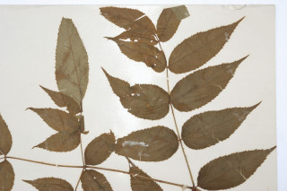
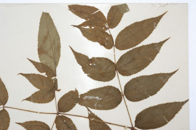

Images :
 

| Habit : | Shrub to small trees , up to 5 m tall. |
| Leaves : | Leaves compound , bipinnate , to 60 cm long, alternate , spiral ; stipules adnate to petiole ; pinnae 7-11, rachis with prickles , leaflets 5-9 in each, subsessile , lamina 5.5-10 x 1.8-3 cm, lanceolate , apex acuminate , base acute , margin serrate and ciliate ; secondary_nerves 7-8 pairs, ciliate on nerves; tertiary_nerves coarsely reticulate . |
| Inflorescence / Flower : | Flowers in large spreading panicled umbels , up to 30 per umbel ; pedicels 2 cm long, petals greenish-white, polygamomonoecious . |
| Fruit and Seed : | Berry , 4-5 celled and angled ; seeds compressed. |